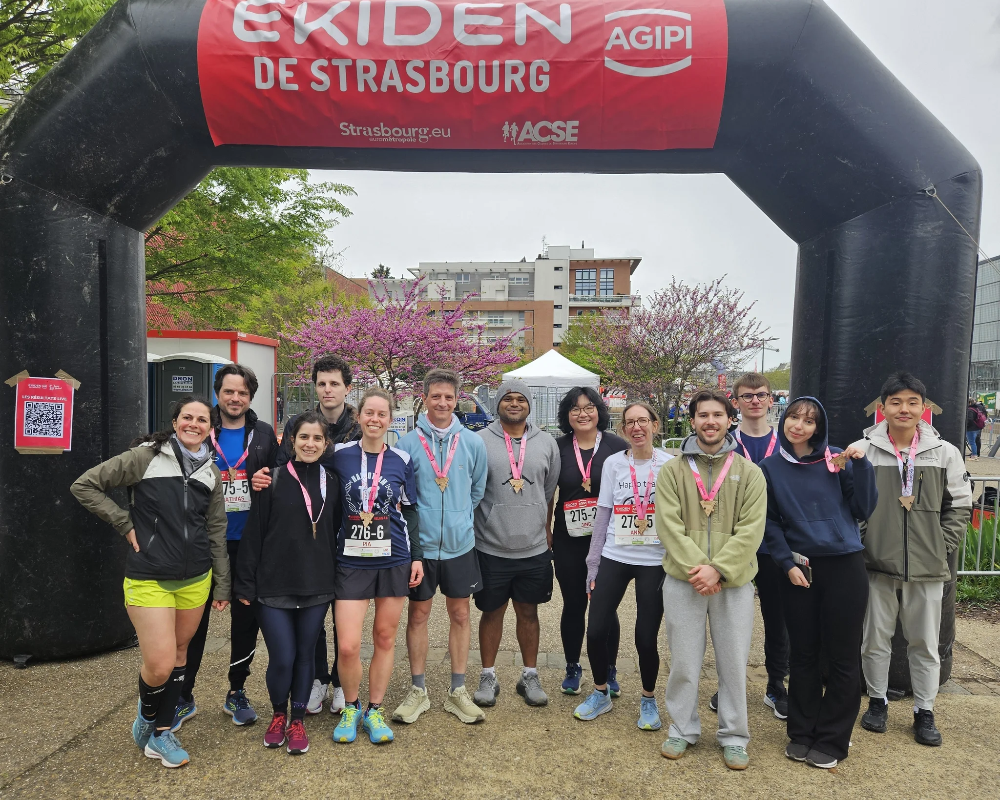

<!-- Home page and HaploTeam picture -->
  <div class="first_part_mainpage">
    {% include header.html %}
    <h1>Proud to be yeast geneticists</h1>
  </div>

  <div class="containerpluslogo">
    
  </div>

  <hr>

  <div class="multichoice_bubbles">
    <div class="container-fluid">
      <h2>Our latest published papers:</h2>
    </div>
  </div>

  {% assign this_year = site.time | date: '%Y' | plus: 0 %}
  {% assign last_year = this_year | minus: 1 %}
  {% assign base_papers = site.papers | where_exp: "paper", "paper.layout != 'index_page'" | sort: 'pub_date' | reverse %}
  {% assign current_papers = base_papers | where: "year", this_year %}
  {% assign last_year_papers = base_papers | where: "year", last_year %}
  {% assign prioritized_papers = current_papers | concat: last_year_papers %}
  {% assign displayed = 0 %}

  {% for paper in prioritized_papers %}
    {% if displayed >= 2 %}
      {% break %}
    {% endif %}
    {% if paper.mainpage == true or paper.mainpage == nil %}
      {% include paper_builder.html data=paper %}
      {% assign displayed = displayed | plus: 1 %}
    {% endif %}
  {% endfor %}

  <!-- <div class="containerpluslogo">
    
    <p>Wordcloud generated using <a href="https://github.com/rdmorin/scholargoggler">scholargoggler</a>, get your own!</p>
  </div> -->